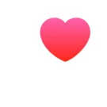
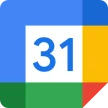

- Age
- 21
- Location
- Kolkata, West Bengal
- Occupation
- College student
- Asthma
- 10+ years
Apps she uses


Primary user, person with asthma
Madhushree Das
“I don’t know how much is too much until it’s too late.”
She gets breathless on stairs and during exertion, and relies on her inhaler once symptoms appear. That makes her anxious, so she avoids activity. She wants to stay active without guessing where her limit is.
Goals
- Stay active without triggering her asthma
- Know her safe activity limits
- Avoid sudden breathlessness in public
- Feel confident during daily movement
Pain points
- No early warning before symptoms start
- Never sure how much activity is safe today
- Depends on her inhaler once symptoms worsen
- Health apps aren’t made for asthma
Behaviours and patterns
- Avoids intense physical activity
- Stops only when symptoms appear
- Relies on past experience, not data
- Seeks reassurance during exertion
Technology use
- Uses her inhaler when needed
- Tracks steps or heart rate now and then
- Has no asthma-specific monitoring tool